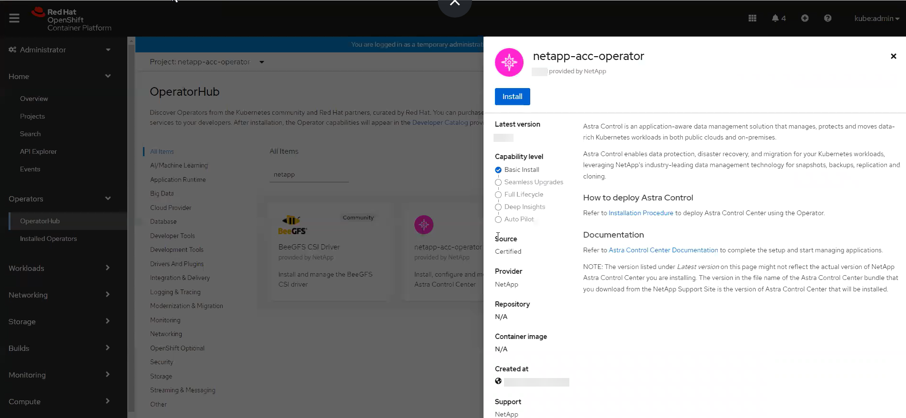
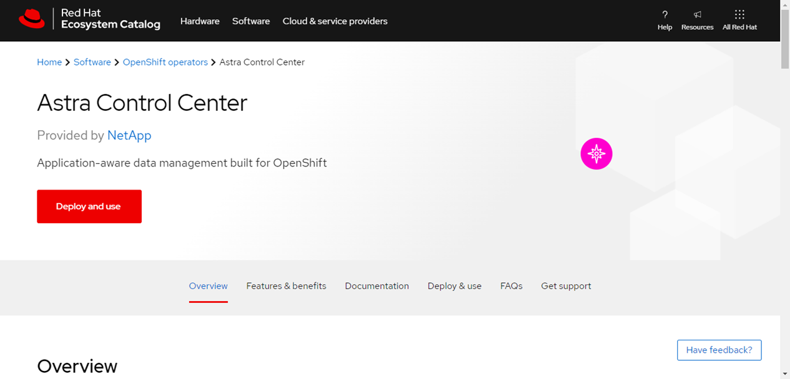

要求變更文件
要求變更文件 編輯此頁面
編輯此頁面 瞭解如何作出貢獻
瞭解如何作出貢獻使用OpenShift作業系統集線器安裝Astra Control Center
貢獻者
如果您使用Red Hat OpenShift、可以使用Red Hat認證的操作員來安裝Astra Control Center。請使用此程序從安裝Astra Control Center "Red Hat生態系統目錄" 或使用Red Hat OpenShift Container Platform。
完成此程序之後、您必須返回安裝程序、才能完成 "剩餘步驟" 以驗證安裝是否成功並登入。
-
符合環境先決條件： "開始安裝之前、請先準備好環境以進行Astra Control Center部署"。
-
健全的叢集運算子與API服務：
-
從OpenShift叢集確保所有叢集操作員都處於健全狀態：
oc get clusteroperators -
從OpenShift叢集、確保所有API服務都處於健全狀態：
oc get apiservices
-
-
* FQDN位址*：取得資料中心Astra Control Center的FQDN位址。
-
* OpenShift權限*：取得必要的權限並存取Red Hat OpenShift Container Platform、以執行所述的安裝步驟。
-
已設定的憑證管理程式：如果叢集中已存在憑證管理程式、您需要執行某些作業 "必要步驟" 因此Astra Control Center不會安裝自己的憑證管理程式。依預設、Astra Control Center會在安裝期間安裝自己的憑證管理程式。
-
* Kubernetes入口控制器*：如果您有一個Kubernetes入口控制器來管理外部服務存取、例如叢集中的負載平衡、您就需要將其設定為與Astra Control Center搭配使用：
-
建立運算子命名空間：
oc create namespace netapp-acc-operator
-
"完成設定" 適用於您的入口控制器類型。
-
下載並擷取Astra Control Center
-
前往 "Astra Control Center評估下載頁面" 於 NetApp 支援網站。
-
下載包含Astra Control Center的套裝組合 (
astra-control-center-[version].tar.gz）。 -
（建議但可選）下載Astra Control Center的憑證與簽名套件 (
astra-control-center-certs-[version].tar.gz）若要驗證套件的簽名：tar -vxzf astra-control-center-certs-[version].tar.gzopenssl dgst -sha256 -verify certs/AstraControlCenter-public.pub -signature certs/astra-control-center-[version].tar.gz.sig astra-control-center-[version].tar.gz隨即顯示輸出
Verified OK驗證成功之後。 -
從Astra Control Center套裝組合擷取映像：
tar -vxzf astra-control-center-[version].tar.gz
安裝NetApp Astra kubecl外掛程式
NetApp Astra kubectl命令列外掛程式可在執行與部署及升級Astra Control Center相關的一般工作時節省時間。
NetApp為不同的CPU架構和作業系統提供外掛程式二進位檔。執行此工作之前、您必須先瞭解您的CPU和作業系統。
-
列出可用的NetApp Astra kubectl外掛程式二進位檔、並記下作業系統和CPU架構所需的檔案名稱：

KECBECTl外掛程式庫是tar套件的一部分、會擷取到資料夾中 kubectl-astra。ls kubectl-astra/ -
將正確的二進位檔移至目前路徑、並將其重新命名為
kubectl-astra：cp kubectl-astra/<binary-name> /usr/local/bin/kubectl-astra
將映像新增至本機登錄
-
為您的Container引擎完成適當的步驟順序：
-
切換到tar檔案的根目錄。您應該會看到這個檔案和目錄：
acc.manifest.bundle.yaml
acc/ -
將Astra Control Center映像目錄中的套件映像推送到本機登錄。執行之前、請先進行下列替換
push-images命令：-
以<BUNDLE_FILE> Astra Control套裝組合檔案的名稱取代 (
acc.manifest.bundle.yaml）。 -
以<MY_FULL_REGISTRY_PATH> Docker儲存庫的URL取代支援；例如 "https://<docker-registry>"。
-
以<MY_REGISTRY_USER> 使用者名稱取代。
-
以<MY_REGISTRY_TOKEN> 登錄的授權權杖取代。
kubectl astra packages push-images -m <BUNDLE_FILE> -r <MY_FULL_REGISTRY_PATH> -u <MY_REGISTRY_USER> -p <MY_REGISTRY_TOKEN>
-
-
切換到tar檔案的根目錄。您應該會看到這個檔案和目錄：
acc.manifest.bundle.yaml
acc/ -
登入您的登錄：
podman login <YOUR_REGISTRY> -
針對您使用的Podman版本、準備並執行下列其中一個自訂指令碼。以包含任何子目錄的儲存庫URL取代<MY_FULL_REGISTRY_PATH> 。
Podman 4export REGISTRY=<MY_FULL_REGISTRY_PATH> export PACKAGENAME=acc export PACKAGEVERSION=22.11.0-82 export DIRECTORYNAME=acc for astraImageFile in $(ls ${DIRECTORYNAME}/images/*.tar) ; do astraImage=$(podman load --input ${astraImageFile} | sed 's/Loaded image: //') astraImageNoPath=$(echo ${astraImage} | sed 's:.*/::') podman tag ${astraImageNoPath} ${REGISTRY}/netapp/astra/${PACKAGENAME}/${PACKAGEVERSION}/${astraImageNoPath} podman push ${REGISTRY}/netapp/astra/${PACKAGENAME}/${PACKAGEVERSION}/${astraImageNoPath} donePodman 3export REGISTRY=<MY_FULL_REGISTRY_PATH> export PACKAGENAME=acc export PACKAGEVERSION=22.11.0-82 export DIRECTORYNAME=acc for astraImageFile in $(ls ${DIRECTORYNAME}/images/*.tar) ; do astraImage=$(podman load --input ${astraImageFile} | sed 's/Loaded image: //') astraImageNoPath=$(echo ${astraImage} | sed 's:.*/::') podman tag ${astraImageNoPath} ${REGISTRY}/netapp/astra/${PACKAGENAME}/${PACKAGEVERSION}/${astraImageNoPath} podman push ${REGISTRY}/netapp/astra/${PACKAGENAME}/${PACKAGEVERSION}/${astraImageNoPath} done
指令碼所建立的映像路徑應如下所示、視登錄組態而定： https://netappdownloads.jfrog.io/docker-astra-control-prod/netapp/astra/acc/22.11.0-82/image:version
尋找操作員安裝頁面
-
請完成下列其中一個程序、以存取操作員安裝頁面：
-
從Red Hat Openshift Web主控台：
-
登入OpenShift Container Platform UI。
-
從側功能表中、選取*運算子>運算子中樞*。
-
搜尋並選擇NetApp Astra Control Center營運者。

-
-
從Red Hat生態系統目錄：
-
選擇NetApp Astra Control Center "營運者"。
-
選擇*部署和使用*。
-

-
安裝操作員
-
完成*安裝操作員*頁面並安裝操作員：
此運算子可用於所有叢集命名空間。 -
選取運算子命名空間或
netapp-acc-operator命名空間將會自動建立、做為操作員安裝的一部分。 -
選取手動或自動核准策略。
建議手動核准。每個叢集只能執行單一運算子執行個體。 -
選擇*安裝*。
如果您選擇手動核准策略、系統會提示您核准此操作員的手動安裝計畫。
-
-
從主控台移至「作業系統集線器」功能表、確認操作員已成功安裝。
安裝Astra Control Center
-
從Astra控制中心操作員* Astra控制中心*索引標籤內的主控台、選取*建立適用的*。

-
完成
Create AstraControlCenter表單欄位：-
保留或調整Astra Control Center名稱。
-
新增Astra Control Center的標籤。
-
啟用或停用自動支援。建議保留「自動支援」功能。
-
輸入Astra Control Center FQDN或IP位址。請勿進入
http://或https://在「地址」欄位中。 -
輸入Astra Control Center版本、例如22.04.1。
-
輸入帳戶名稱、電子郵件地址和管理員姓氏。
-
選擇的Volume回收原則
Retain、Recycle`或 `Delete。預設值為Retain。 -
選取入口類型：
-
Generic(ingressType: "Generic"）（預設）如果您使用另一個入口控制器、或偏好使用自己的入口控制器、請使用此選項。部署Astra Control Center之後、您需要設定 "入口控制器" 使用URL公開Astra Control Center。
-
AccTraefik(ingressType: "AccTraefik"）如果您不想設定入口控制器、請使用此選項。這會部署Astra控制中心
traefik閘道即Kubernetes「負載平衡器」類型服務。
Astra Control Center使用「負載平衡器」類型的服務 (
svc/traefik（在Astra Control Center命名空間中）、並要求指派可存取的外部IP位址。如果您的環境允許負載平衡器、但您尚未設定負載平衡器、則可以使用MetalLB或其他外部服務負載平衡器、將外部IP位址指派給服務。在內部DNS伺服器組態中、您應該將Astra Control Center所選的DNS名稱指向負載平衡的IP位址。 -
如需有關「負載平衡器」和入口服務類型的詳細資訊、請參閱 "需求"。 -
在*映像登錄*中、輸入您的本機容器映像登錄路徑。請勿進入
http://或https://在「地址」欄位中。 -
如果您使用需要驗證的映像登錄、請輸入映像秘密。
如果您使用需要驗證的登錄、 在叢集上建立秘密。 -
輸入管理員名字。
-
設定資源擴充。
-
提供預設的儲存類別。
如果已設定預設儲存類別、請確定它是唯一具有預設註釋的儲存類別。 -
定義客戶需求日處理偏好設定。
-
-
選取「Yaml」檢視以檢閱您所選的設定。
-
選取
Create。
建立登錄機密
如果您使用需要驗證的登錄、請在Openshift叢集上建立密碼、然後在中輸入密碼名稱 Create AstraControlCenter 表單欄位。
-
為Astra Control Center運算子建立命名空間：
oc create ns [netapp-acc-operator or custom namespace]
-
在此命名空間中建立秘密：
oc create secret docker-registry astra-registry-cred n [netapp-acc-operator or custom namespace] --docker-server=[your_registry_path] --docker username=[username] --docker-password=[token]
Astra Control僅支援Docker登錄機密。 -
填寫中的其餘欄位 「Create」（建立）「吧！Control Center」表單欄位。